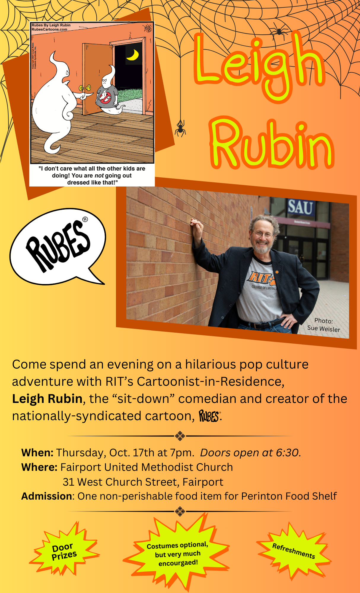

2024 Live In-Person Events
Fairport, NYWhen: Thursday, October 17th, 2024, 7:00 p.m. Doors open at 6:30.
Where: Fairport United Methodist Church
31 West Church Street, Fairport
(Admission: One non-perishable food item for Perinton Food Shelf)

Cuesta College San Luis Obispo Campus, CA
When: Saturday, October 5th, 2024. 8:30AM - 5:30PM
Where: Cuesta College San Luis Obispo Campus
Highway 1, San Luis Obispo, CA 93405
For more info please contact:
Brian Schwartz
brian_schwartz@cuesta.edu
For more information, click the image below:
Kona, HI
When: Saturday, September 21st, 2024. Dinner at 5PM, Leigh and guest speakers at 6:30PM.
Where: Kona Elks Lodge - 75-150 Hualalai Rd, Kailua-Kona, HI 96740
Admission: Dinner and show - $15 and one non-perishable food item. Show only - One non-perishable food item for Kona Food Bank.
Dinner menu: Shoyu Chicken, Kalua Pork, Rice, Mac Salad, Haupia Pie.
Dinner Tickets on Sale 7-15-24.
Contact Cheryl Kobashigawa @ 818.438.7145 to reserve a seat, for dinner tickets and more info.

San Luis Obispo, CA
When: Saturday, August 10th, 2024. 2:00PM
Where: San Luis Obispo Downtown Public Library
SLO Library Community Room
995 Palm Street, SLO, CA 93403
For more info please contact:
Monique Matta
mmatta@slolibrary.org
(805) 781-4187
or click here!
RIT - Rochester, NY
When: Friday, April 26, 2024, 1-2:30 p.m.
Where: Rochester Institute of Technology
Booth 3330
Fairport, NY
When: Thursday, April 25, 2024, 7:00 p.m. Doors open at 6:30.
Where: Fairport United Methodist Church
31 West Church Street, Fairport
(Admission: One non-perishable food item for Perinton Food Shelf)
Click here to get your copy!

Rochester, NY
When: Wednesday, April 24, 2024, 5:00 p.m.
Where: Rochester Institute of Technology
Simone Center for Innovation and Entrepreneurship
(More details soon.)
2023 Zoom Events
Rochester, NYWhen: Wednesday, November 8, 2023, 5:00 p.m EST -8:00 p.m. EST
Where: Live on line, hosted by RIT Press/ Rochester Institute of Technology
For Event and Registration Details see:
Think Like a Cartoonist, with Leigh Rubin and Friends!
2023 Live In-Person Events
Rochester, NYWhen: Saturday, October 14, 2023, 3:00p.m - 5:00 p.m.
Where: Rochester Institute of Technology
Student Hall for Exploration and Development (SHED) - Room 4300
Register here: www.rit.edu/brickcity/events/leigh-rubin-presentation
Rochester, NY
When: Wednesday, April 26, 2023 - 5:00 p.m.
Where: Rochester Institute of Technology
Simone Center Innovation and Entrepreneurship
2022 Live In-Person Events
Rochester, NYWhen: Sat, Oct. 15, 2022- 3:00 p.m.-5:00 p.m.
Where: Rochester Institute of Technology Frank Ritter Memorial Ice Arena (RIA)
Details: Please click the following link: https://www.rit.edu/brickcity/events/leigh-rubin
Rochester, NY
"Imagination through the eyes of RIT Cartoonist in Residence Leigh Rubin."
When: Tuesday, April 19th, 2022 7:00 - 9:00p.m. EST
Where: Wegmans Theater/Magic Building/Rochester Institute of Technology
Instructions for Non-RIT Users: Click on the following link: https://cglink.me/2d1/r1561196
Click or Scan QR Code
Click the three lines on the top left and choose 'Events'
In the search box type in 'Imagination'
Once the event loads, click 'Register'
If there are any issues, please email Kerri directly at kasadm@rit.edu

Leigh is also available for your virtual events!
2021 Live Stream Events
Rochester, NYStreamed Live: The Secret of a Perfect Cartoon
When: Thursday, Oct. 14, 2021, 7:00 p.m. - 8 p.m.EST/ 4:00-5:00 p.m. PSTWhere: RIT College of Liberal Arts, 30 Lomb Memorial Drive, Rochester, New York 14623
for more details see: https://tinyurl.com/4f6e5yxk
California Rangeland Trust
(Streamed live on April 15, 2021) See it on YouTube here
An evening of Cows and Cartoons, hosted by Jane and Steve Sinton and the California Rangeland Trust.

Chuck Jones Creativeside Chat with Leigh Rubin
(Streamed live on April 8, 2021) See it on YouTube here
Comic strip creator/author Leigh Rubin chats with host Ben Olson about the creative process that joins images and words to make the clever, often hilarious, Rubes cartoons.

2020 Live Stream Events
Fresno Bee(Streamed live on Oct 28, 2020) See it on YouTube here.
The Secret of Creating the Perfect Cartoon Hosted by The Fresno Bee on October 28, 2020.
Deadline Club
(Streamed Live on August 25, 2020) See it on YouTube here.
See Leigh's livestreamed online event
Hosted by
the Deadline Club-Society of Professional Journalists
from August 25!

When Cartoon Worlds Collide:
A Twistedly Absurd Mashup of Politics and Comics.
Leigh Rubin Live in Person Events
Have a Real-Life Cartoonist Speak at Your Next
Conference, Meeting or Event!
Nobody finds more fun and inspiration in dogs, cows, cats, kids, religion, weird and quirky people and just plain life in general like Leigh Rubin. His witty streak of humor shines through in his comic panel, Rubes, where the animals take on humanlike attitudes and the people behave, well, um, oddly. Sometimes silly, sometimes irreverent but always hilarious, Rubes has grown to be standard fare in newspapers around the globe, 365 days a year.
"Maybe you could call me a sit-down comedian," Rubin muses. "Whatever you call it, I'm just gratified I have the opportunity to make other people laugh." Delighting millions daily with his internationally syndicated cartoon, Rubes, Leigh Rubin inspires, motivates and entertains.
Through humor, Leigh emphasizes the rewards of persistence and the fun of problem solving while celebrating the joy of creativity. Leigh's fast-paced and fun-filled presentations have gained a reputation for inspiring those who attend to add a little creativity to their own lives. Rubin said he tries to inspire people to break their normal routine of looking at things and think outside of the box, even though he himself has to draw inside a box.


2020 Live in Person Events
Rochester, NYWhen: Friday, Oct. 9, 2020, 6:00 p.m. - 7 p.m.
Where: RIT College of Liberal Arts, 30 Lomb Memorial Drive, Rochester, New York 14623
for more details see: https://www.rit.edu/brickcity/events/the-secret-of-creating-a-perfect-cartoon
Verona, Wisconsin (With Phil Hands, editorial cartoonist for the Wisconsin State Journal!)
When: Thursday, Oct. 1, 2020, 7 p.m. Postponed
Where: Verona Public Library, 500 Silent Street, Verona, WI 53593
For more info contact: Trudy Lorandos (608) 845-7180 ext. 127
Dodgeville, Wisconsin
When: September 28, 2020, 7 p.m. Postponed
Where: Dodgeville Public Library, 139 Iowa Street, Dodgeville, WI 53533
For more info contact: Vickie Stangel vstangel@swls.org (608) 935-3728
2019 Live in Person Events
Verona, Wisconsin (With Phil Hands, editorial cartoonist for the Wisconsin State Journal!)When: Thursday, Oct. 3, 2019, 7 p.m.
Where: Verona Public Library , 500 Silent Street, Verona, WI 53593
For more info contact: Trudy Lorandos (608) 845-7180 ext. 127
Madison, Wisconsin
When: Tuesday , Oct. 1 – Saturday, October 5, 2019, 9 a.m.-5 p.m.
Where: Alliant Energy Center, 1919 Alliant Energy Way, Madison, WI 53713
Main Exhibit Hall, Booth C-1
Madison, Wisconsin (With Phil Hands, editorial cartoonist for the Wisconsin State Journal!)
When: Monday, Sept. 30, 2019, 7 p.m.
Where: Central Library, 201 W. Mifflin St., Madison, WI 53703
For more info contact: Neeyati Shah 608-266-6350 NShah@madisonpubliclibrary.org
Rochester, New York (Leigh Rubin interviewed by Mike Johansson of RIT School of Communication)
When: April 27, 2019, 7 p.m.
Where: 92 Lomb Memorial Drive, Rochester, NY 14623
For more info contact: 585-475-2444
Rochester, New York
When: April 27, 2019
Where: Rochester Institute of Technology
Location: Student Alumni Union (SAU/004) - Ingle Auditorium.
Time: 11:00 am - 12:00 pm
For event info and details see: Curiosty & Creativity: Getting them and Keeping Them
2018 Live in Person Events
Portland, ORWhen: Wednesday, April 18, 2018, 6:00 p.m.
Where: Live Studios, 1210 SW 6th Ave. Portland, Oregon 97204
For more info please visit:
https://designportland.org/events/drawing-inspiration
Contact: Sean Sterling: ssterling@oregonian.com
Santa Maria, CA
When: Wednesday, February 28, 2018, 7:00 p.m.
Where: The Santa Maria Times, 3200 Skyway Dr, Santa Maria, CA 93455
For more info and to make reservations contact:
Marga Cooley: mcooley@leecentralcoastnews.com (805)739- 2143
2017 Live in Person Events
San Luis Obispo, California (Hosted by the San Luis Obispo Tribune)When: Wednesday, October 25, 2017, 7:00 p.m.
Where: The Fremont Theater, 1035 Monterey St, San Luis Obispo, CA 93401
For info and tickets about the event click TribuneComics.EventBrite.com
Appleton – Menasha, Wisconsin (Hosted by the Appleton Post-Crescent)
When: Wednesday, October 11, 2017, 6:00 PM
Where: University of Wisconsin- Fox Valley Communication Arts Center,
Room 1229 1478 Midway Rd, Menasha, WI 54952
For more info contact: Colleen Warner: CWARNER@greenbay.gannett.com (920) 431-8555
Milwaukee, Wisconsin – Marquette University
When: Tuesday, October 10 , 2017
Green Bay, Wisconsin (Hosted by the Green Bay Press Gazette)
When: Tuesday, October 10 , 2017, 6:00 PM
Where: The Neville Museum - 210 Museum Pl, Green Bay, WI 54303
For more info contact:Colleen Warner: CWARNER@greenbay.gannett.com (920) 431-8555
Milwaukee, Wisconsin (Hosted by the Milwaukee Journal Sentinel )
When: Monday, October 9, 2017, 6:00 PM
Where: Milwaukee Journal Sentinel-333 W. State St. Milwaukee, WI 53203
For more info contact: Andrew Johnson: andy.johnson@jrn.com (414) 223-5214
Madison, Wisconsin
When: Tuesday , October 3 – Saturday, October 7 2017, 9 a.m.-5 p.m.
Where: Alliant Energy Center, 1919 Alliant Energy Way, Madison, WI 53713
Main Exhibit Hall, Booth C-1
Verona, Wisconsin (With Phil Hands, editorial cartoonist for the Wisconsin State Journal!)
When: Thursday, Oct. 5, 2017, 7 p.m.
Where: Verona Public Library , 500 Silent Street, Verona, WI 53593
For more info contact: Trudy Lorandos (608) 845-7180 ext. 127
Madison, Wisconsin (With Phil Hands, editorial cartoonist for the Wisconsin State Journal!)
When: Monday, October 2, 2017, 7 p.m.
Where: Central Library, 201 W. Mifflin St., Madison, WI 53703


Fresno, California
When: Thursday, June 8, 2017, 6:30 p.m.
Where: The Fresno Bee 1626 E Street, Fresno, CA 93786
Order Tickets
For more info contact: Customerloyalty@fresnobee.com
Modesto, California
When: Wednesday, June 7, 2017, 6:30 PM
Where: The Modesto Bee — 1325 H Street, Modesto, Ca 95354
Order Tickets
For more info contact: Customerloyalty@modbee.com
Sacramento, California
When: Tuesday, June 6 , 2017, 6:30 PM
Where: The Sacramento Bee — 2100 Q Street, Sacramento, Ca 95816
Order Tickets
For more info contact: beepressclub@sacbee.com
Nashville, Tennessee
When: Monday, February 6, 2017, 5:30-6pm Check-in, 6pm Event begins
Where: Downtown Nashville Public Library, 615 Church St., Nashville, TN 37219
(Event Hosted by the Nashville Tennessean and the Nashville Public Library)
For more info contact: Devyn Downey @ ddowney1@gannett.com
For more info and to reserve seats.
2016 Live in Person Events
Verona, Wisconsin (With Phil Hands, editorial cartoonist for the Wisconsin State Journal!)When: Thursday, Oct. 6, 2016, 7 p.m.
Where: Verona Public Library , 500 Silent Street, Verona, WI 53593
For more info contact: Trudy Lorandos (608) 845-7180 ext. 127
For more info see: When World's Collide
Madison, Wisconsin
When: Thursday, Oct. 6, 2016, 11:30 a.m.
Where: World Dairy Expo, Alliant Energy Center Exhibition Hall, (Mendota Room 3) Madison, Wisconsin.
(For the unveiling of the "Big Book of Moo" by Leigh Rubin. All book sales proceeds go to the National DHIA Scholarship Fund) For more info contact: JoDee Sattler, 414-587-5839. For more info see: WDE Event
Madison, Wisconsin (With Phil Hands, editorial cartoonist for the Wisconsin State Journal!)
When: Tuesday, October 4, 2016, 7 p.m.
Where: Central Library, 201 W. Mifflin St., Madison, WI 53703
For more info see: When World's Collide
Saratoga Springs Resort, New York
When: Thursday, August 18, 2016
Where: Saratoga Casino and Raceway
Private Event
Rochester, New York
When: Wednesday, June 22, 2016, 6:00 p.m.
Where: Democrat and Chronicle, 245 E. Main St., Rochester, New York 14604
For details about the event click here:
Fresno, California
When: Thursday, February 18, 2016
Where: Fresno County Farm Bureau
Camarillo, California
When: Tuesday, February 9, 2016, 6:00 p.m.
Where: City of Camarillo Public Library, 4101 Las Posas Road, Camarillo, CA 93010
For more info contact: Georg Winkler 805-383-5685 gwinkler@camarillolibrary.org
To register for the event: http://bit.ly/terriblewaste
San Diego, California
When: Tuesday, January 26, 2016, 6:00 p.m.
Where: San Diego Central Library, Neil Morgan Auditorium, 330 Park Blvd., San Diego CA 92101
For more info contact: (619) 236-5800 Or visit: http://www.sandiego.gov/public-library/pdf/
2015 Live in Person Events
Fresno, CaliforniaWhen: Thursday, December 3, 2015, 5:00 p.m.
Where: The Fresno Bee 1626 E Street, Fresno, CA 93786
For more info contact: features@fresnobee.com or call: 559-441-6330
Costa Mesa, California
When: Sunday, November 15, 2015, 2 p.m.
Where: The Chuck Jones Center for Creativity, 3321 Hyland Avenue, Suite A, Costa Mesa, CA 92626
For more info contact: Programs@ChuckJonesCenter.org or call 949-660-7793 x 107
Verona, Wisconsin
When: Thursday, Oct. 1, 2015, 7 p.m.
Where: Verona Public Library , 500 Silent Street, Verona, WI 53593
For more info contact: Trudy Lorandos (608) 845-7180 ext. 127
Madison, Wisconsin
When: Wednesday, September 30, 2015, 7 p.m.
Where: Central Library, The Bubbler Room, 201 W. Mifflin St., Madison, WI
For more info contact: Lisa Mettauer (608) 266-6300
Sacramento, California
When: Saturday and Sunday, July 25 and 26, 2015
Where: The California State Fair
Leigh Rubin will be at the 2015 California State Fair July 25 and 26!
When: Friday, July 24, 2015Where: The Learning Exchange
for more information please Click Here.
Pierre, South Dakota
When: Thursday, April 16, 2015
South Dakota Bankers Association
Staten Island, New York (Two events)
When: Monday, March 23, 2015, 6:30 P.M.
Where: Wagner College, One Campus Road, Staten Island, NY 10301
Manzulli Boardroom, Foundation Hall
Open to all students, faculty and public!
For more info see: an easy to read map of Wagner College
New York, NY
When: Thursday, March 19, 2015
Where: Columbia University
Columbia Scholastic Press Association
For more info see: http://cspa.columbia.edu
San Antonio, Texas
When: Thursday, February 5, 2015, 7:00 PM
Where: San Antonio Central Library, 600 Soledad, San Antonio, TX 78205
For more info contact: Andrew Gordon (210) 207-2629
2014 Live in Person Events
Staten Island, New YorkWhen: Wednesday, March 18, 2014, 6:30 P.M.
Where: St. George Library
5 Central Avenue, Staten Island, NY, 10301
Manhattan, New York City
When: Tuesday, March 17, 2014, 6:30 P.M.
Where: Mid-Manhattan Library
455 5th Ave. New York, New York 10016
Columbus, Ohio
When: Wednesday, March 11, 2014
National Dairy Herd Information Association's 50th Annual Meeting
Portland, Oregon
When: Wednesday, March 4, 2015, 6:00 PM
Where: Skype Live Studio,1210 SW 6th Ave. Portland, OR 97204
RESERVE YOUR SEATS at: OREGONLIVE.COM/SpeakerSeries
Not a member yet? Visit: OREGONLIVE.COM/activate
FREE for Oregonian Plus members.
$5 general admission.
Light refreshments will be served
Sacramento, California
When: Friday, October 24, 2014, 6:30 PM
Where: The Sacramento Bee — 2100 Q Street, Sacramento, Ca 95816
For more info contact: Greg Saunders (916) 321-1650
Modesto, California
When: Tuesday, October 23, 2014, 6:30 PM
Where: The Modesto Bee — 1325 H Street, Modesto, Ca 95354
For more info contact: Jeff Farrow (209) 578-2327
Verona, Wisconsin
When: Thursday, Oct. 2, 2014, 7 p.m.
Where: Verona Public Library , 500 Silent Street, Verona, WI 53593
For more info contact: Trudy Lorandos (608) 845-7180 ext. 127
Madison, Wisconsin
When: Tuesday, September 30, 2014, 7 p.m.
Where: Central Library, Room 301, 201 W. Mifflin St., Madison, WI
For more info contact: Lisa Mettauer (608) 266-6300
Los Angeles, California
When: Saturday, April 12, 2014 — Sunday, April 13, 2014
Where: University of Southern California
Los Angeles Times Festival of Books
Booth # 521
For more info see: LA Times Festival of Books
Staten Island, New York
When: Monday, March 24, 2014, 6:30-8:00 P.M.
Where: Wagner College, One Campus Road, Staten Island, NY 10301
Manzulli Boardroom, Foundation Hall
Open to all students, faculty and public!
For more info see:
Also see an easy to read map of Wagner College
Staten Island Zoo, New York, Two Performances!
When: Saturday, March 22, 2014
Where: Staten Island Zoo
614 Broadway, Staten Island, NY 10310
Two Performances!
1:30 PM (Free with zoo admission)
7:00 PM Special Event!
For more info see: Staten Island Zoo's Facebook page
and www.statenislandzoo.org or call: (718) 442-3101
New York, NY
When: Thursday, March 20, 2014
Where: Columbia University
Columbia Scholastic Press Association
For more info see: http://cspa.columbia.edu
Tulare, California
When: Feb. 12, 2014, 3:00 p.m.
Where: World Ag Expo — Tulare, CA
The Seminar Center
Seminar Trailer #3
Expo Lane
(Between "R" and "S" streets)
For more information, visit www.worldagexpo.com
Visalia, California
When: Tuesday, Feb. 11, 2014, 7-8:30 p.m.
Where: 210 Connect, 210 W. Center Ave., Visalia CA, 93291
For more info contact: Melinda Morales, 559.735.3277
Hosted By the Times-Delta Media Group and the First Presbyterian Church
Nashville (Brentwood), Tennessee
When: Wednesday, February 5, 2014, 6:30 p.m.
Where: Brentwood Library , 8109 Concord Rd., Brentwood, TN 37027
For more info contact: Robyn Zandi (615) 371-0090 ext. 8510
2013 Live in Person Events
Rochester, New YorkWhen:
Thursday, Nov. 7, 2013, 10:30 a.m. to noon
Saturday, Nov. 9, 2013, 11 a.m. to 4 p.m.
Sunday, Nov. 10, 2013, 1 to 4 p.m.
Where: The National Museum of Play, One Manhattan Square, Rochester, NY 14607
What: National Toy Hall of Fame Induction and Weekend Celebration.
For more info contact: Susan Trien, 585-410-6359
Rochester, New York
When: Sunday, Nov. 3, 2013, 2:00 p.m.
Where: The Jewish Community Center of Greater Rochester, 1200 Edgewood Avenue,Rochester, N.Y. 14618
What: Lane Dworkin Jewish Book Festival
For more info contact: Lori Harter , 585-461-2000
Verona, Wisconsin
When: Thursday, Oct. 3, 2013, 7 p.m.
Where: Verona Public Library , 500 Silent Street, Verona, WI 53593
For more info contact: Trudy Lorandos (608) 845-7180 ext. 127
San Luis Obipso, Ca
When: May 2, 2013
Where: San Luis Obispo Country Club
Leigh Rubin wows Annual Luncheon Attendees, May 2, 2013. San Luis Obispo, CA
Los Angeles, CA
When: Saturday, April 20 - Sunday, April 21, 2013
Where: University of Southern California
Los Angeles Times Festival of Books
Booth # 521
For more info see: LA Times Festival of Books
New York, NY
When: Thursday, March 21, 2013
Where: Columbia University
Columbia Scholastic Press Association
For more info see: http://cspa.columbia.edu
Staten Island, New York
When: Wednesday, March 20, 2013, 7:00 PM
Where: Wagner College, One Campus Road, Staten Island, NY 10301
Gate House Lounge in Harborview (Dorm building).
Open to all students, faculty and public!
For more info see: http://wagner.edu/newsroom/events/2013-03/
Also see an easy to read map of Wagner College
Sacramento, California
When: Monday, Feb. 25, 2013, 6:30PM
Where: The Sacramento Bee — 2100 Q Street, Sacramento, Ca 95816
For more info contact: Steve Nutter - snutter@sacbee.com (916) 321-1650
Tampa, Florida
When: Sunday, February 10, 2013, 1:00 p.m.
Where: John F. Germany Public Library
900 N. Ashley Dr., Tampa, FL 33602-3704
For more info contact: (813) 273-3652
Ruskin, Florida
When: Saturday, February 9, 2013, 2:30 p.m.
Where: South Shore Regional Library
15816 Beth Shields Way, Ruskin, FL 33573-4903
For more info contact: (813) 273-3652
2012 Live in Person Events
Maugansville, MDWhen: Friday, December 7, 2012
(Private Event)
San Jose, California
When: Friday, November 2, 2012
California Assessor's Association Training Conference (Private Event)
Portland, Oregon
When: Thursday, November 1, 2012, 1:00 p.m.
Where: Osher Lifelong Learning Institute, University of Oregon in Portland
White Stag Block, 70 NW Couch Street, Portland, OR 97209
For more info contact: (503) 412-3653 or 800-824-2714
Eugene, Oregon
When: Wednesday, Oct. 31, 2012, 1:30 p.m.
Where: Osher Lifelong Learning Institute, University of Oregon,
Baker Downtown Center, 975 High Street Eugene, OR 97401
For more info contact: (503) 346-0697 or 800-824-2714
Rochester, New York - Two Events
When: Thursday, October 18, 2012, 6:30 PM
Where: Rochester Democrat and Chronicle, 55 Exchange Blvd., Rochester, NY 14614.
For more info contact: 585.258.2620 dfloss@gannett.com
When: Thursday, October 18, 2012, 12:00-2:00PM
Where: Rochester Institute of Technology
7B-1104 (Gannett Hall, Neblette Conference Room)
Verona, Wisconsin
When: Thursday, Oct. 4, 2012, 7 p.m.
Where: Verona Public Library , 500 Silent Street, Verona, WI 53593
For more info contact: Trudy Lorandos at: tlorandos@scls.lib.wi.us (608) 845-7180 ext. 127
San Gabriel, CA
When: Saturday, September 8, 2012, 2:00pm
Where: San Gabriel Library
500 S. Del Mar Ave., San Gabriel, CA 91776
For more info contact: Julie Sorensen, (626) 287-0761 or jsorensen@library.lacounty.gov
Sacramento, Ca
When: Wednesday, May 23, 2012, 6:30PM
Where: The Sacramento Bee — 2100 Q Street, Sacramento, Ca 95816
For more info contact: Steve Nutter - snutter@sacbee.com (916) 321-1650
Modesto, Ca
When: Tuesday, May 22, 2012, 6:30PM
Where: The Modesto Bee — 1325 H Street, Modesto, Ca 95354
For more info contact: Jeff Farrow - jfarrow@modbee.com (209) 578-2327
Los Angeles, CA
When: Saturday, April 21 - Sunday, April 22, 2012
Where: University of Southern California
Los Angeles Times Festival of Books
Booth # 524
For more info see: LA Times Festival of Books
Mt Pleasant, Michigan
When: Friday, March 30, 2012
Where: Michigan Milk Producers Association
Bremerton, Washington
When: Friday, March 23, 2012
International Listening Association Convention
Corvallis, Oregon - Two Events
When: Thursday, February 16, 2012, 7:30PM
Where: The Majestic Theatre, 115 SW 2nd St, Corvallis, Oregon 97333
For more info contact: Cody.Castellano@lee.net 541-758-9591
Event hosted by the Corvallis Gazette-Times
When: Thursday, February 16, 2012, 4:00 - 6:00 PM
Where: Oregon State University
Memorial Union Journey Room
The Dalles, Oregon
When: Wednesday, November 30, 2011, 7:00PM
Where: The Dalles Public Library 722 Court Street,The Dalles, OR 97058-2247
For more info contact: Kathy Ursprung, The Dalles Chronicle, at: (541) 506-4601 or kursprung@thedalleschronicle.com
2011 Live in Person Events
Sacramento, CaliforniaWhen: Saturday, November 19, 2011, 11:00AM-1:00PM
Where: California Writers Club - Sacramento Branch
Tokyo Buffet 7217 Greenback Lane, Citrus Heights, CA 95621
(between San Juan Avenue and Fountain Square Drive)
For more info contact: Margie Yee Webb
Margie@CatMulan.com (916) 213-0798
Also see: http://www.cwcsacramentowriters.org/
Placerville, California
When: Friday, November 18, 2011, 6:00PM
Where: The Placerville Mountain Democrat, 1360 Broadway Placerville, CA 95667-5902
For more info contact: Michael Raffety - mraffety@mtdemocrat.net (530) 344-5067
Sacramento, California
Due to popular demand...Second Sacramento Bee event just added!
When: Friday, November 18, 2011, 10:00AM
Where: The Sacramento Bee - 2100 Q Street, Sacramento, Ca 95816
For more info contact: Steve Nutter - beebuzzpoints@sacbee.com (916) 321-1650
When: Thursday, November 17, 2011, 7:00PM
Where: The Sacramento Bee - 2100 Q Street, Sacramento, Ca 95816
For more info contact: Steve Nutter - beebuzzpoints@sacbee.com (916) 321-1650
Universal City, California
When: Saturday, November 12, 2011, 10:00 A.M.
Where: Universal Hilton Hotel -555 Universal Terrace Parkway, Universal City, California
for all the details please visit:
http://www.dailynews.com/healthylivingexpo and click on the "Speakers" link.
FREE PARKING!
Rochester, New York — Three Events:
When: Thursday, October 27, 2011, 6:30 PM
Where: Rochester Democrat and Chronicle, 55 Exchange Blvd., Rochester, NY 14614.
For more info contact: 585.258.2620 dfloss@gannett.com
When: Wednesday, October 26, 2011, 4:30-5:30 PM
Where: Rochester Institute of Technology
76-1125 (Carlson Auditorium, Carlson Hall)
(This event is open to all members of the RIT & Rochester community)
For more info contact: 585.258.2620 dfloss@gannett.com
When: Wednesday, October 26, 2011, 12:00-1 PM
Where: Rochester Institute of Technology
7B-1104 (Gannett Hall, Neblette Conference Room)
(This event is open to all members of the College of Imaging Arts and Sciences community)
For more information contact: 585-475-5154 debbie.kingsbury@rit.edu
Events sponsored by Rochester Institute of Technology and The Democrat and Chronicle
Rutgers, New Jersey
When: Monday, October 24, 2011
Where: Rutgers University, Garden State Scholastic Press Association Conference
For more info see: www.gsspa.org/home/conferences
Staten Island, New York
When: Monday, October 24, 2011, 7:00PM
Where: JCC of Staten Island. Joan and Allan Bernikow Building,
1466 Manor Rd. Staten Island, NY, 10314
For more info contact: Orit Lender - olender@SIJCC.COM (718) 475-5227
Event sponsored by the Jewish Community Center of Staten Island and the Staten Island Advance
Springfield, Massachusetts
When: Friday, October 21, 2011 10:10AM & 11:15AM
Where: Springfield Technical Community College
Scibelli Theatre, Scibelli Hall, Armory Square, Springfield, MA
For more info contact: Philip O'Donohue at: pcodonoghue@stcc.edu (413) 755-4233
Madison, WI
Visit the "Rubes Cartoons" booth at the 2011 World Dairy Expo!
When: October 4 - 8, 2011
Where: Alliant Energy Center,1919 Alliant Energy Center Way,Madison, WI 53713
For more info please visit: http://www.world-dairy-expo.com/
Verona, Wisconsin
When: Thursday, Oct 6, 2011, 7:00PM
Where: Verona Public Library , 500 Silent Street,Verona, WI 53593
For more info contact: Trudy Lorandos at:
tlorandos@scls.lib.wi.us (608) 845-7180 ext. 127
San Luis Obispo, CA
Come meet Leigh Rubin at the "Rubes Cartoons" booth in beautiful San Luis Obispo at the Central Coast Book and Author Festival!
When: Sunday, September 18 2010, 10:00 AM
Where: Central Coast Book and Author Festival, Mission Street, San Luis Obispo For more info please visit: SLO Library Foundation
Macon, Georgia
When: Tuesday, June 21, 2011, 7:00PM
Where: The MaconTelegraph 120 Broadway Macon, GA 31201
For more info contact:
Becky Robertson rrobertson@macon.com (478) 744-4291
Event sponsored by The Macon Telegraph
Torrance, CA
When: Wednesday, May 25, 2011, 7 pm
Where: Katy Geissert Civic Center Library, 3301 Torrance Blvd.,Torrance 90503
For more info see: http://www.torranceca.gov/Library/5504.htm or call: (310) 618-5959
Richmond, British Columbia
When: Saturday, May 7, 2011
Where: River Rock Casino Resort (Private Event)
Los Angeles, CA
When: Saturday, April 30 - Sunday, May 1, 2011
Where: University of Southern California
Los Angeles Times Festival of Books
Booth #579
For more info see: http://events.latimes.com/festivalofbooks/
Santa Maria, CA
When: Wednesday, April 13, 2011
Where: Santa Maria Public Library-421 S. McClelland Street, Santa Maria, CA 93454 http://engagedpatrons.org/EventsExtended.cfm?SiteID=8803&EventID=87647 For more information contact Cultural Events at 805.925.0994 x117 or dhildinger@ci.santa-maria.ca.us
College Station, Texas
When: Thursday, April 7, 2011
Where: Texas A & M University
3:30 p.m. in room 113 of the Kleberg Animal and Food Sciences Center Sponsored by Texas AgriLife Research
For more information see: http://aglifesciences.tamu.edu/college100/events/
Visalia, California
When: Thursday, March 17, 2011
Where: Western United Dairyman Convention (Private event)
For more info see: Rubes cartoonist to entertain WUD convention crowd
Denver, Colorado
When: Thursday, February 3, 2011, 6:30PM
Where: The Denver Press Clubb
1330 Glenarm Pl. Denver, CO 80204
For more info contact (303) 571-5260
Long Beach, CA
When: Tuesday, January 18 2011, 6:00PM
Where: 101 Pacific Avenue Long Beach, CA 90822
For more info contact: Rich Archbold (562) 499-1285
Event sponsored by the Press-Telegram and the Long Beach Public Library Foundation
Santa Ana, California
When: Wednesday, January 19 2011, 6:00PM
Where: The Orange County Register 625 N. Grand Ave., Santa Ana, CA 92701
For more info contact Joyce Marthaller (714) 796-3652
jmarthaller@ocregister.com
2010 Live in Person Events
Placerville, CaliforniaWhen: Friday, December 10, 2010, 6:00PM
Where: The Placerville Mountain Democrat, 1360 Broadway Placerville, CA 95667-5902
For more info contact: Michael Raffety - mraffety@mtdemocrat.net (530)344-5067
Sacramento, California
When: Thursday, December 9, 2010, 7:00PM
Where: The Sacramento Bee - 2100 Q Street, Sacramento, Ca 95816
For more info contact: Steve Nutter - snutter@sacbee.com (916) 321-1650
Ashland, Oregon — Two Events:
When: Wednesday, November 10, 2010, 6:30PM
Where: Southern Oregon University 1250 Siskiyou Blvd., Ashland, Oregon 97520
Hannon Library: Meese Meeting Room (Open to all students, faculty and public!)
For more info contact: D.L. Richardson at Richardd@SOU.EDU
When: Wednesday, November 10, 2010, 10:00AM
Where: Southern Oregon University 1250 Siskiyou Blvd., Ashland, Oregon 97520
Digital Media Foundations class (Open to all students, faculty and public!)
For more info contact: D.L. Richardson at Richardd@SOU.EDU
Events sponsored by the Medford Mail Tribune/Ashland DailyTidings and the SOU Department of Communication
Eugene, Oregon
When: Tuesday, November 9, 2010, 6:00 PM
Where: Eugene Public Library, Downtown; 100 West 10th Ave., Eugene, Oregon 97401
For more info contact: 541-682-5450
Rochester, New York — Two Events:
When: Thursday, October 28, 2010, 6:30 PM
Where: Rochester Democrat and Chronicle, 55 Exchange Blvd., Rochester, NY 14614.
For more info contact: 585.258.2242 or email dfloss@gannett.com
When: Thursday, October 28, 2010, 1:00 PM
Where: Rochester Institute of Technology, 1 Lomb Memorial Dr., Rochester, NY 14623-5698
Auditorium (building 70, 1400)
For more info contact: 585.258.2242 or email dfloss@gannett.com
(This event is open to all RIT students and faculty).
Staten Island, New York — Two Events:
When: Tuesday, October 26, 2010, 7:00 PM
Where: Snug Harbor Cultural Center and Botanical Garden (Veterans Memorial Hall)
1000 Richmond Terrace, Staten Island, NY 10301
Open to the public.
When: Monday, October 25, 2010, 7:00 PM
Where: Wagner College, One Campus Road, Staten Island, NY 10301 (Spiro Hall 2 )
Open to all students, faculty and public!
'Twisted' mister on Staten Island
Events sponsored by the Staten Island Advance, Wagner College and the Council on the Arts and Humanities for Staten Island.
When: October 1, 2010, 7:00 PM Cartoon Cows on Parade
Where: Madison Public Library (Alicia Ashman Branch) 733 North High Point Road, Madison, Wisconsin
For More info call: 608-824-1780
Come meet Leigh Rubin at the "Rubes Cartoons" booth in beautiful San Luis Obispo at the Central Coast Book and Author Festival!
When: Sunday, September 19 2010, 10:00 AM
Where: Central Coast Book and Author Festival, Mission Street, San Luis Obispo
For more info please visit: SLO Library Foundation
When: Saturday, September 18 2010, 5:00 PM Reception - Event begins 5:30 PM
Where: The San Luis Obispo City Library Community Room, 995 Palm Street San Luis Obispo, CA
For more info call: 805-528-8260
When: Friday, September 10, 2010, 7:00 PM
Where: The Globe News Center for the Performing Arts (Gilliland Education Room), 401 South Buchanan, Amarillo, TX
For more info call: 806-378-3051
When: Thursday September 9, 2010, 10:00 AM
Where: Amarillo College -2201 South Washington Street, Amarillo, TX
(This event is open to students and faculty only... The following event on Friday, September 10 is open to the pubilc!).
For More details on the events listed above please visit Leigh's Author Page on Amazon
(click images for larger views)
Santa Maria, California
April 1, 2010 A video: Popular cartoonist to visit local library (as seen on Fox KCOY TV) in Santa Maria, California and newspaper story cartoonist releases twisted new book featuring Leigh's favorite creations over the years.
Kansas City, Missouri
March 25, 2010 Leigh being interviewed on the Morning show on Fox WDAF TV in Kansas City Missouri
Bay City, Michigan
March 12, 2010 Leigh gave his "Cartoony" presentaion at the Farm Women's Symposium, Bay City, Michigan
San Antonio, Texas
January 26, 2010 The Rubes Cartoony Show came to the San Antonio Central Library.
2009 Live in Person Events
Shell Beach, California
October 27, 2009 Shell Beach, California — Leigh was the featured luncheon speaker at the California Assessor's Association annual conference.
Corvallis, Oregon
October 22, 2009 The Corvallis Gazette-Times hosts Leigh at the The First Congregational Church 'Rubes' cartoonist: Keep it fun

Roseburg, Oregon
October 21, 2009 Standing room only at the Umpqua Valley Arts Center! — Roseburg, Oregon (Hosted by The Roseburg News-Review)
Middleton, Wisconsin
October 1, 2009 Fun and laughs at the Middleton, Wisconsin Library! Photo courtesy of Jim Massey.
Santa Rosa, CA.
August 8, 2009 Leigh was the featured artist in residence at The Charles M. Schulz Museum and Research Center, Santa Rosa, CA.
Heyworth, Illinois
July 23, 2009. Lots of laughs at Farm Journal's Corn College, Heyworth, Illinois
Queens, NY
June 13, 2009 An afternoon of laughter and cartoony fun at the Forest Hills Library in Queens, New York!
Santa Fe New Mexico
March 3, 2009 Rubes® came to the Santa Fe New Mexican! A great time sharing laughs with readers and newspaper staff!
Orange County, CA.
February 18, 2009 Leigh came to The Orange County Register and gave two presentations for both Register in Education and OC Register's Reader's Insider Club.
Red Bluff, CA.
January 24, 2009 Leigh opened the American Library Association (ALA) Denver Sunrise Speaker Series.
2008 Live in Person Events
Ag Summit, Chicago, Ill.
December 9, 2008 Leigh is the breakfast keynote speaker at the DTN/Progressive Farmer 2009 Ag Summit in Chicago, Illinois.
Leigh and John Stossel October 27, 2008 Leigh was the featured keynote speaker at the 123rd annual Inland Press Association's Awards Breakfast in Chicago, Illinois. Also speaking at the conference was Creators Syndicate columnist, investigative journalist, author and ABC News 20/20 co-anchor John Stossel.
Sacramento, CA.
October 15, 2008 The Albany Public Library and the Albany Press Democrat welcome Leigh to the Albany Public Library.
Topeka, Kansas
May 27, 2008 The Shawnee County Public Library and the Topeka Capital Journal host Leigh for an evening of fun and laughter!